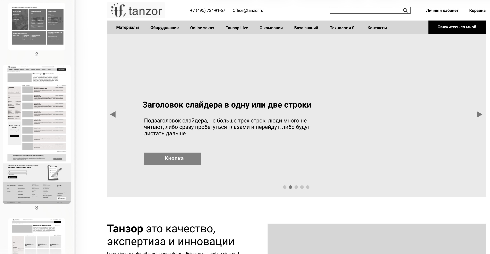
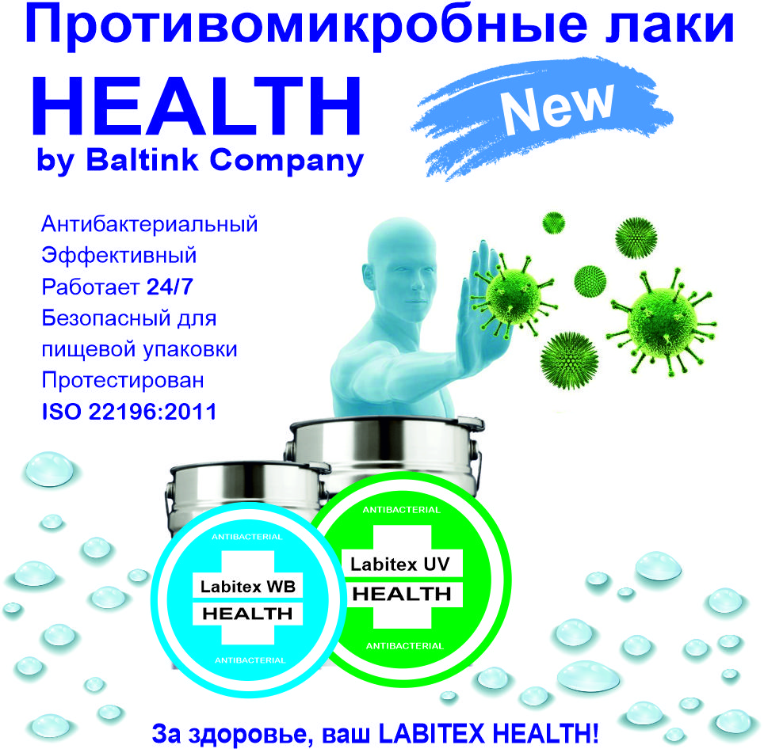
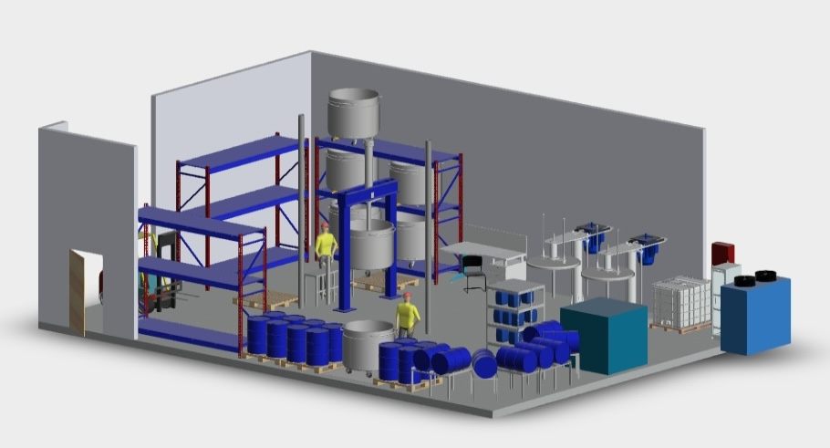
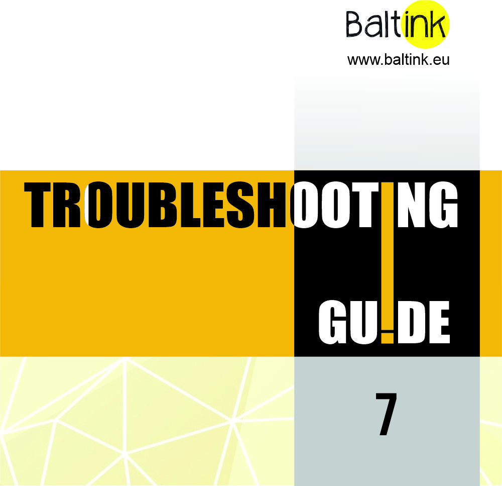

Промышленный маркетинг: цифровая стратегия, продукты и производство
Комплексная работа над маркетингом производителя материалов для полиграфической отрасли: создание цифровой площадки, продвижение специализированной продукции, развитие экспертного контента и презентация новых производственных возможностей.
В «Танзор» я руководила маркетинговым направлением и соединяла несколько задач: от позиционирования компании и запуска сайта до вывода продуктов на рынок, подготовки виртуального выставочного стенда и коммуникации с профессиональной аудиторией.
Цифровая площадка для презентации компании, продукции и экспертизы.




Представить сложную экспертизу и новые возможности компании
Компания работала на специализированном B2B-рынке, где решение о покупке зависит от технических характеристик материалов, стабильности качества и компетенций производителя. Нужно было выстроить понятную систему коммуникаций - от сайта и продуктовых материалов до отраслевого контента и выставочного присутствия.
Цифровое присутствие
Создать сайт, который последовательно представляет компанию, продуктовый портфель, производственные возможности и экспертные материалы.
Продукты и рынок
Подготовить профессиональную презентацию новых и специализированных продуктов, включая LABITEX Health.
Экспертиза и коммуникации
Раскрыть технологические компетенции, представить развитие производства и использовать отраслевые и цифровые площадки для общения с клиентами.
От цифровой площадки до презентации новых производственных возможностей
Создание сайта: от концепции до запуска
Я формировала концепцию и структуру сайта, работала над позиционированием и содержанием разделов. Для выбора подрядчика организовала многоэтапный отбор: подготовила презентацию проекта, изучила брифы, провела онлайн-встречи и оценила опыт потенциальных исполнителей. По итогам выбрала команду для реализации.
Сайт задумывался как долгосрочная цифровая площадка - не только визитная карточка, но и инструмент презентации продуктов, производственных компетенций и профессиональных знаний компании.
Сайт компании «Танзор» ↗Главная страница сайта
Контент, который объясняет сложные технологии
Для сайта я развивала тематические направления, которые помогали переводить техническую экспертизу в понятный и полезный для профессиональной аудитории контент.
«Технолог и я»
Практические вопросы полиграфических технологий и задачи, с которыми сталкиваются специалисты отрасли.
«Мистер и миссис CMYK»
Цвет, подбор оттенков и особенности технологий печати.
«Энциклопедия дефектов» и Troubleshooting Guide
Отдельное направление - экспертные материалы, помогающие клиентам разбираться в дефектах печати и возможных причинах их возникновения. В основу таких материалов лег практический опыт специалистов компании, накопленный за многие годы работы с разными материалами и технологиями.
Обучающий гид для клиентов
Продуктовый маркетинг: LABITEX Health
Я занималась продвижением линейки LABITEX Health - лаков с противомикробными свойствами. Важно было представить назначение и технические особенности специализированного продукта профессиональной аудитории, подготовить понятные материалы и раскрыть его применение в полиграфии.
Также я занималась продвижением производственного направления SIA «BALTINK» в Латвии и размещением материалов о продукции и производственных возможностях в профильных отраслевых изданиях.
Материалы о продукте LABITEX Health
Запуск нового производства УФ-красок
В 2021 году «Танзор» запустил в Шебекино производство полного цикла цветных УФ-красок для узкорулонной флексопечати. Для нового направления было построено отдельное производственное здание и организована линия по выпуску УФ-красок.
3D-визуализация цеха, представленная в кейсе, была рабочим материалом проекта запуска новой производственной линии - она помогала визуализировать будущую производственную площадку. Это не самостоятельная рекламная иллюстрация, а часть работы над реальным производственным проектом.
О производстве на сайте «Танзор» ↗3D-визуализация нового производственного цеха
Построено отдельное здание и запущена новая линия по производству УФ-красок. В кейсе показан маркетинговый контекст развития этого направления; строительство и технический запуск не приписываются моей личной ответственности.
Виртуальная выставка PRINTING EXPO: от концепции до работы с обращениями
Для участия SIA «BALTINK» в виртуальной полиграфической выставке PRINTING EXPO я отвечала за подготовку и продвижение виртуального стенда. Это был отдельный выставочный проект, в котором нужно было продумать не только визуальное представление компании, но и пользовательский сценарий, наполнение и дальнейшую коммуникацию с аудиторией.
Стенд и пользовательский сценарий
Прорабатывала концепцию стенда, согласовывала его отдельные элементы и визуальное устройство: расположение экранов, содержание трансляций и то, что посетитель увидит при нажатии на интерактивные элементы.
Материалы и презентация продукции
Готовила и отбирала материалы для виртуального стенда, продумывала, как представить ассортимент и отдельные продуктовые решения компании профессиональной аудитории.
Возможности платформы и привлечение аудитории
Изучала дополнительные возможности выставочной платформы и варианты размещения информации о компании. Занималась привлечением действующих клиентов на стенд и работой с доступными каналами продвижения.
Посещаемость и передача запросов
Отслеживала посещаемость стенда, фиксировала интерес аудитории и перенаправляла поступавшие запросы профильным технологам, чтобы посетители могли получить профессиональную консультацию.
Связать презентацию продукции с реальным взаимодействием с аудиторией: привлечь посетителей, помочь им разобраться в предложении компании и обеспечить передачу технических вопросов специалистам.
Работающая цифровая площадка и выведенный продукт
Запущен
Сайт продолжает работать и используется для презентации компании и продукции.
Выведен на рынок
Продукт представлен профессиональной аудитории, материалы опубликованы в изданиях.
На выставке
Компания получила цифровое выставочное пространство на Printing Expo.
От стратегии до цифрового выставочного пространства
Я руководила маркетинговым направлением: от формулирования задач и разработки цифровой площадки до продуктового продвижения, контента и представления производственной экспертизы.
Координировала взаимодействие с подрядчиком и участвовала в подготовке маркетинговых материалов для профессиональной аудитории. Результат - сайт, который продолжает работать, и цифровая площадка для представления компании, продукции и её компетенций.
Стратегия и сайт
Позиционирование, структура, выбор подрядчика и запуск.
Продуктовый маркетинг
Вывод LABITEX Health, материалы для профессиональной аудитории.
Контент и выставки
Тематические разделы, отраслевые издания, 3D-стенд на Printing Expo.